Dynamic Linear Models (DLMs) - Time-varying productivity of salmon
Author
Eric French, Madison Heller-Shipley, Karl Veggerby
Published
May 23, 2023
Data
The data explored for this lab is spawner and recruit Kvichak Sockeye data, which is a river system in Bristol Bay, Alaska. This data set includes data from 1952-2005. There is missing spawner data from 1952-1995, and missing recruit data from 1999-2005, with a valid window from 1966-1998.
Load the data
Code
## library(devtools)## Windows users will likely need to set this## Sys.setenv("R_REMOTES_NO_ERRORS_FROM_WARNINGS" = "true")#devtools::install_github("nwfsc-timeseries/atsalibrary") already installed## get datadata(KvichakSockeye, package="atsalibrary")SR_data <- KvichakSockeyehead(SR_data)
The data are a dataframe with columns for brood year (brood_year), number of spawners (spawners), number of recruits (recruits) and PDO at year \(t-2\) in summer (pdo_summer_t2) and in winter (pdo_winter_t2).
## shrink the window of years so the response variable will have a full set of valuesSR_dat_short <- SR_data[SR_data[,"brood_year"] >=1956& SR_data[,"brood_year"] <=1998, ]#Create a column for the response variableSR_dat_short$Yt <-log(SR_dat_short$recruits/SR_dat_short$spawners) #Yt represents log of recruits over spawners. #Create the observation matrixYt <-t(SR_dat_short$Yt)#determines number of elementsTT <-nrow(SR_dat_short)
General tasks
Use the information and data in the previous section to answer the following questions. Note that if any model is not converging, then you will need to increase the maxit parameter in the control argument/list that gets passed to MARSS(). For example, you might try control=list(maxit=2000).
Methods
Reduced Ricker’s Model
Begin by fitting a reduced form of Ricker’s model that includes only a time-varying level (\(\alpha_t\)) and observation error (\(v_t\)). That is,
This model assumes no density-dependent survival in that the number of recruits is an ascending function of spawners. Plot the ts of \(\alpha_t\) and note the AICc for this model. Also plot appropriate model diagnostics.
Code
#create the model params for reduced Ricker's modelZ <-array(NA,c(1,1,TT))Z[1,1,] <-c(1)modlist <-list( # All other arguaments are left as defaultZ = Z,U ="zero",A ="zero",B ="identity")reduced_Rick <-MARSS(Yt, model = modlist)
Success! abstol and log-log tests passed at 24 iterations.
Alert: conv.test.slope.tol is 0.5.
Test with smaller values (<0.1) to ensure convergence.
MARSS fit is
Estimation method: kem
Convergence test: conv.test.slope.tol = 0.5, abstol = 0.001
Estimation converged in 24 iterations.
Log-likelihood: -51.87179
AIC: 109.7436 AICc: 110.359
Estimate
R.R 0.211
Q.Q 0.303
x0.x0 1.002
Initial states (x0) defined at t=0
Standard errors have not been calculated.
Use MARSSparamCIs to compute CIs and bias estimates.
Results: The AICc of this model is 110.36, state plots and residuals are below
Model and State Plots
Code
autoplot(reduced_Rick, silent =TRUE)
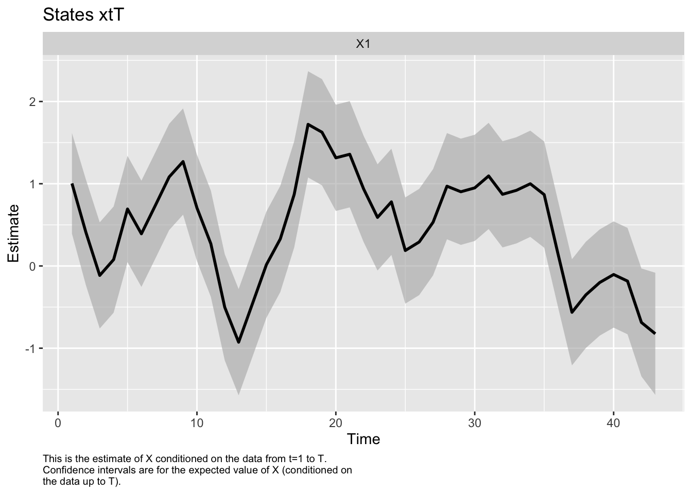
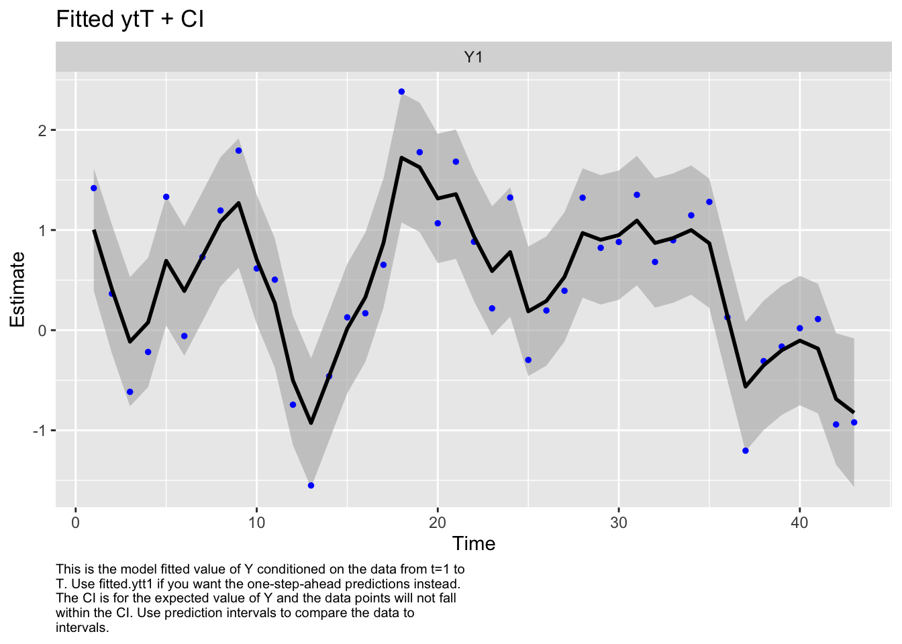
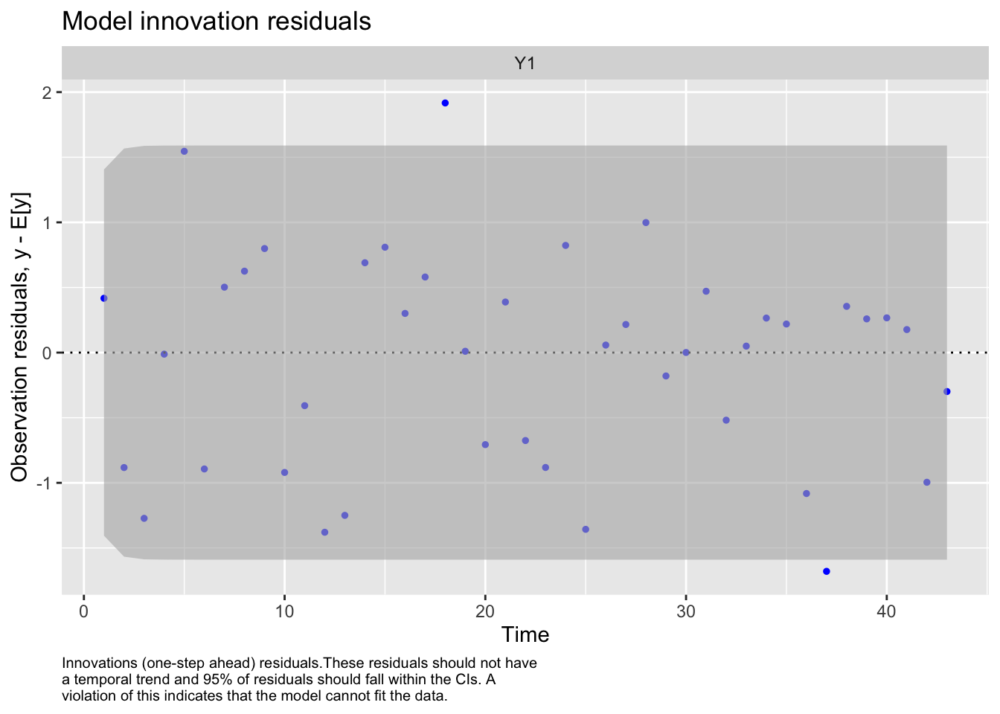
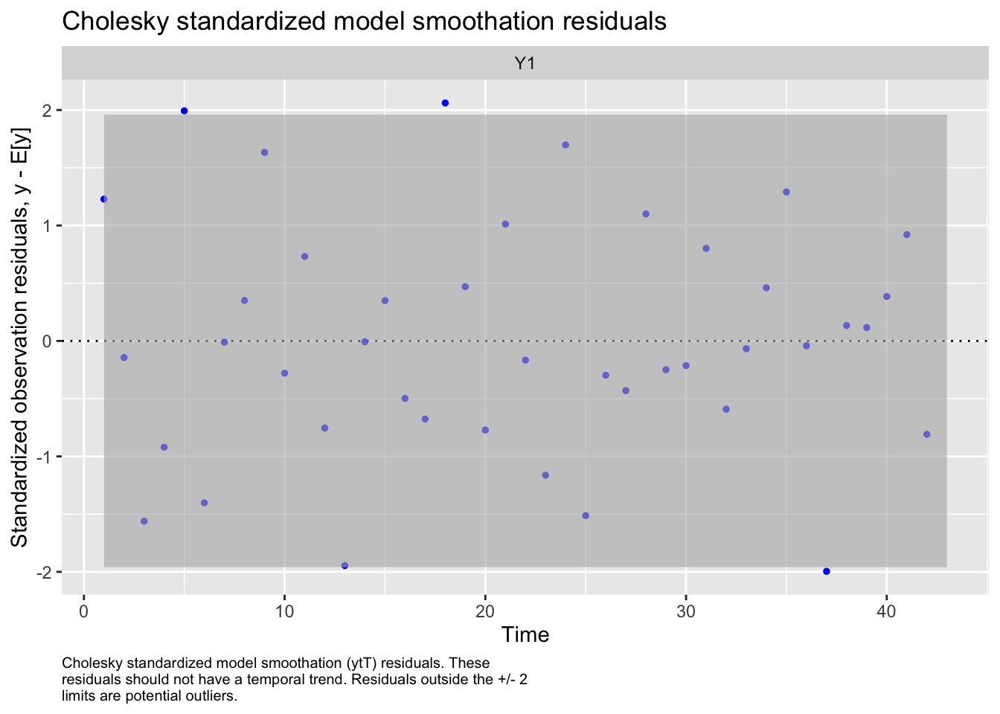
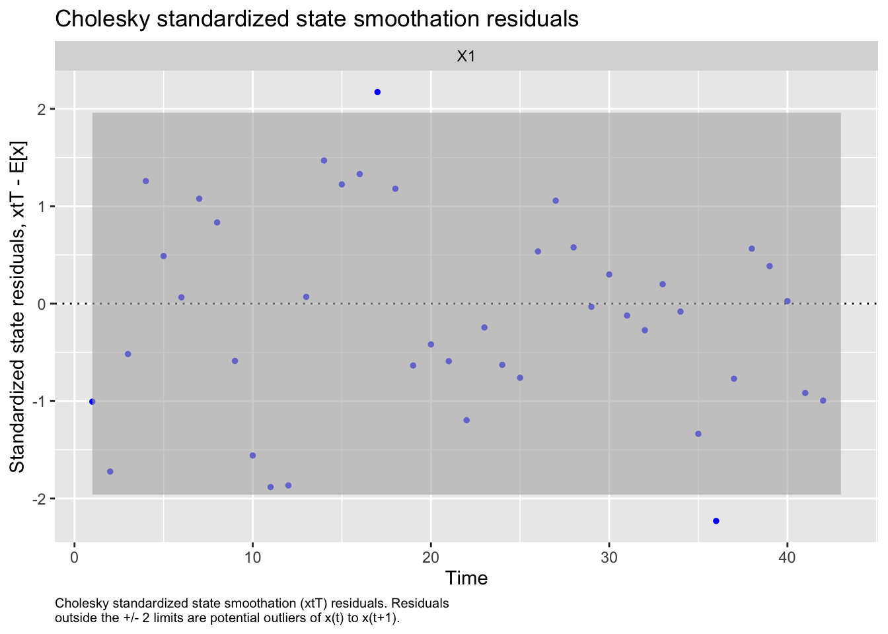
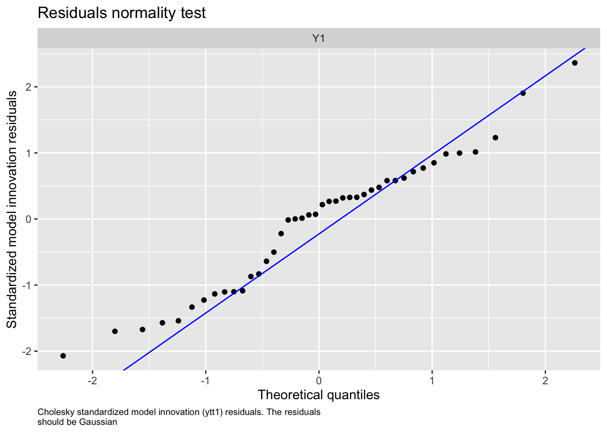
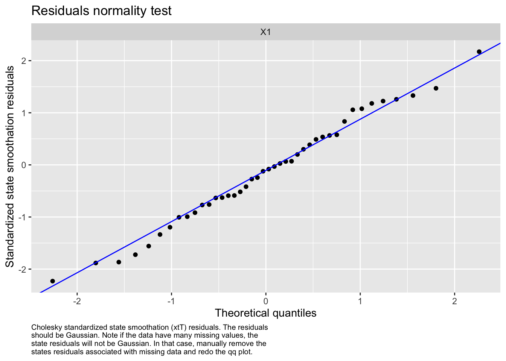
Notes: The observations and level follow each other exactly. This makes sense considering this is the only variable in the model. The model residuals don’t seem to follow a trend, but they are absolutely not normally distributed. The state residuals have no time trend, and the model smoothation results seem to be normally distributed. The ACF plot has significant autocorrelation at lags of 5 and 10 years
Full Ricker’s Model with Static Spawner Effect
Fit the full Ricker model with a time-varying intercept and a static effect of spawners. For this model, obtain the time series of \(\alpha_t\), which is an estimate of the stock productivity in the absence of density-dependent effects. How do these estimates of productivity compare to those from the previous question? Plot the ts of \(\alpha_t\) and note the AICc for this model. Also plot appropriate model diagnostics.
#create the model params for the full Ricker's modelZ <-array(NA,c(1,2,TT)) # the array has 2 elements nowZ[1,1,] <-c(1)Z[1,2,] <- SR_dat_short$spawnersmodlist <-list( # All other arguments are left as defaultZ = Z,U ="zero",A ="zero",B ="identity",Q =ldiag(list("q1",0)) # creates a custom Q matrix with zero variance for the spawner effect... I think)full_Rick <-MARSS(Yt, model = modlist, inits =list(x0 =matrix(c(0),2,1))) # added inits list due to marss error
Success! abstol and log-log tests passed at 26 iterations.
Alert: conv.test.slope.tol is 0.5.
Test with smaller values (<0.1) to ensure convergence.
MARSS fit is
Estimation method: kem
Convergence test: conv.test.slope.tol = 0.5, abstol = 0.001
Estimation converged in 26 iterations.
Log-likelihood: -51.80921
AIC: 111.6184 AICc: 112.6711
Estimate
R.R 0.217557
Q.q1 0.293165
x0.X1 0.936822
x0.X2 0.000007
Initial states (x0) defined at t=0
Standard errors have not been calculated.
Use MARSSparamCIs to compute CIs and bias estimates.
Result: AICC is 112.67, higher than the previous model after multiple attempts at different x0 values. each one resulted in the same model. The increase in AICc is likely driven by an increase in parameters by allowing density dependency and time variation in the intercepts.
Code
autoplot.marssMLE(full_Rick, silent =TRUE)
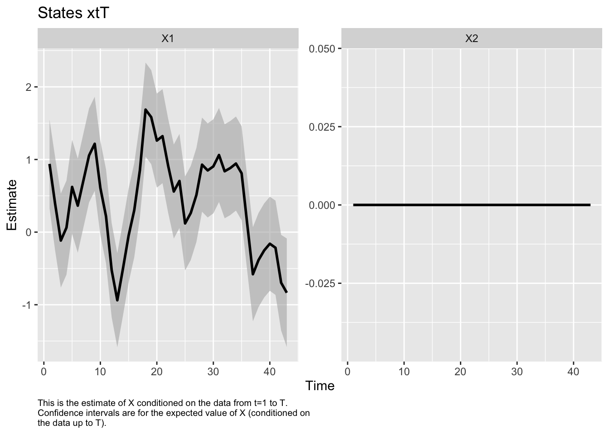
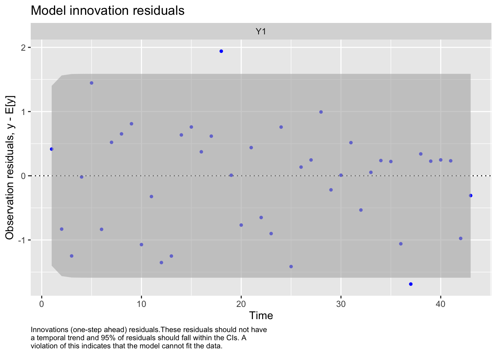
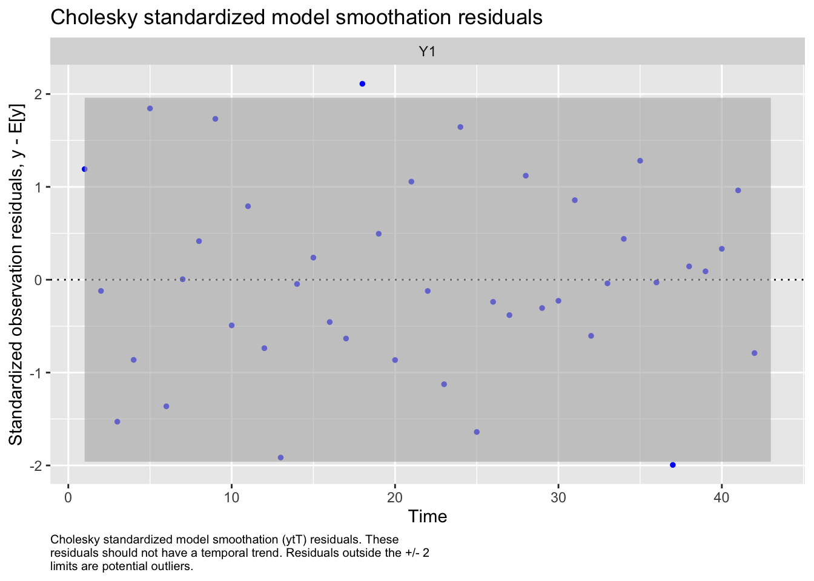
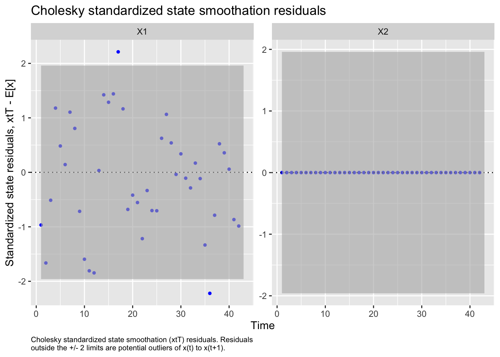
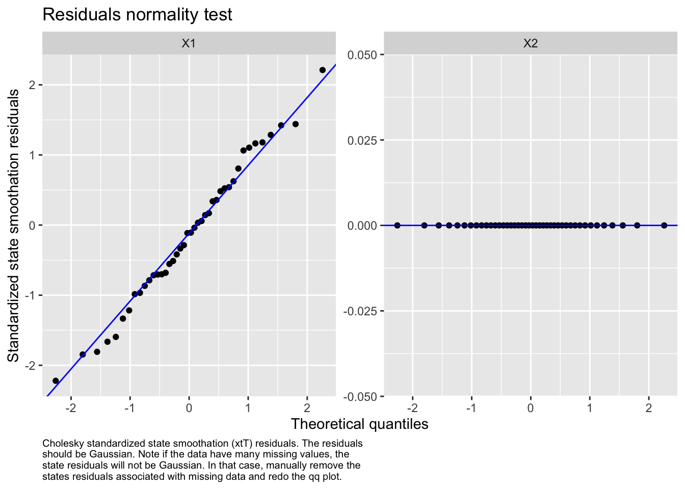
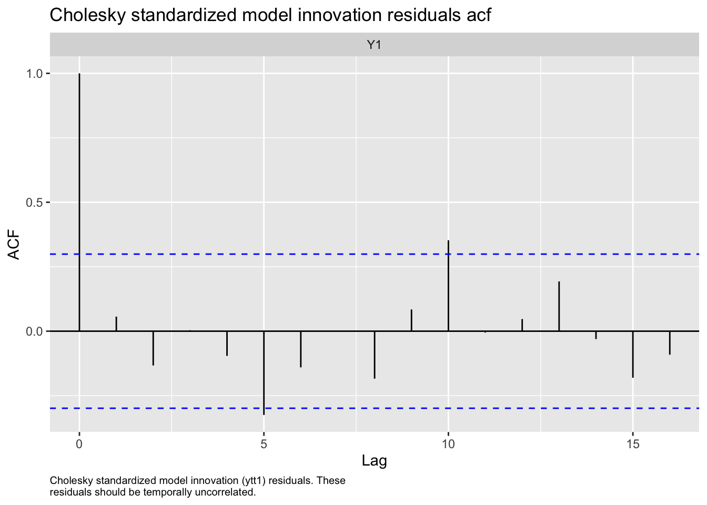
Results: Model fit, residuals, and ACF all look the same as the previous model because all the variation was loaded onto the intercept term.
Full Ricker’s Model with Static Spawner Effect and Summer PDO covariate
Fit the expanded model that includes the summer PDO index as the covariate (pdo_summer_t2). What is the mean level of productivity? Plot the ts of \(\delta_t\) and note the AICc for this model. Also plot appropriate model diagnostics.
#create the model params for the full Ricker's modelZ <-array(NA,c(1,3,TT)) # the array has 3 elements nowZ[1,1,] <-c(1)Z[1,2,] <- SR_dat_short$spawnersZ[1,3,] <- SR_dat_short$pdo_summer_t2 # Covariate data is added to the Z matrix# The model states are the covariate effects in a DLMmodlist <-list( # All other arguments are left as defaultZ = Z,U ="zero",A ="zero",B ="identity",Q =ldiag(list("q1",0,"q3")) # creates a custom Q matrix with zero variance for the spawner effect... I think? Additionally, the intercept variance may need to be contrained further)summer_Rick <-MARSS(Yt, model = modlist, control =list(maxit=1000), inits =list(x0 =matrix(c(1,1,1),3,1))) # added inits list due to marss error
Success! abstol and log-log tests passed at 742 iterations.
Alert: conv.test.slope.tol is 0.5.
Test with smaller values (<0.1) to ensure convergence.
MARSS fit is
Estimation method: kem
Convergence test: conv.test.slope.tol = 0.5, abstol = 0.001
Estimation converged in 742 iterations.
Log-likelihood: -51.78324
AIC: 115.5665 AICc: 117.8998
Estimate
R.R 2.00e-01
Q.q1 3.16e-01
Q.q3 0.00e+00
x0.X1 1.01e+00
x0.X2 5.49e-06
x0.X3 2.85e-02
Initial states (x0) defined at t=0
Standard errors have not been calculated.
Use MARSSparamCIs to compute CIs and bias estimates.
Result: AICC is 117.89, higher than the previous models and all the variance is loaded onto the intercept again. I have tried to limit the variation of the intercept but I get a MARSS error every time. I have also tried to change the initial values bu the resulting model was the same.
Code
autoplot(summer_Rick, silent =TRUE)
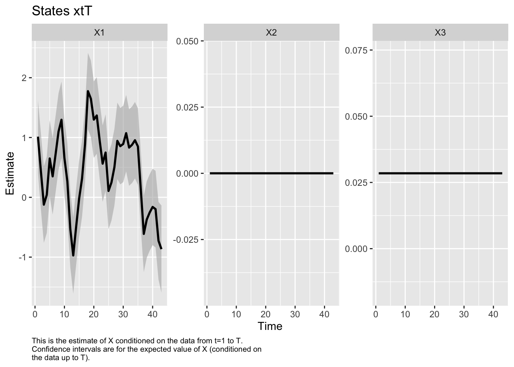
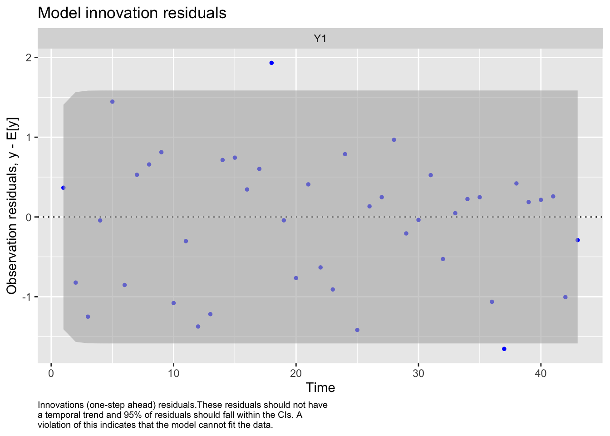
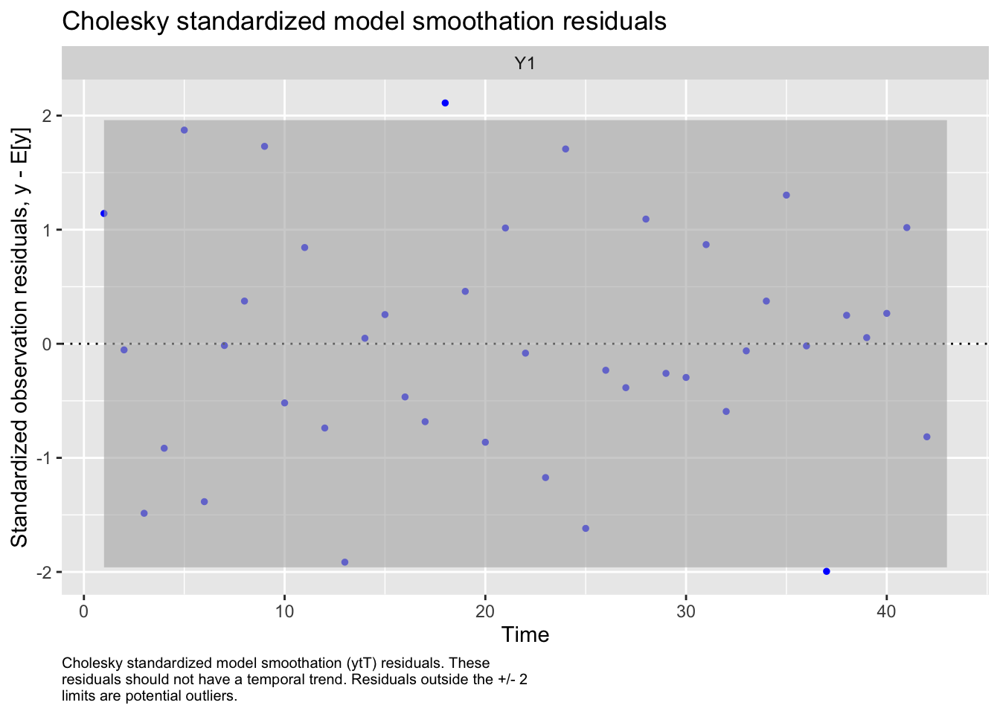
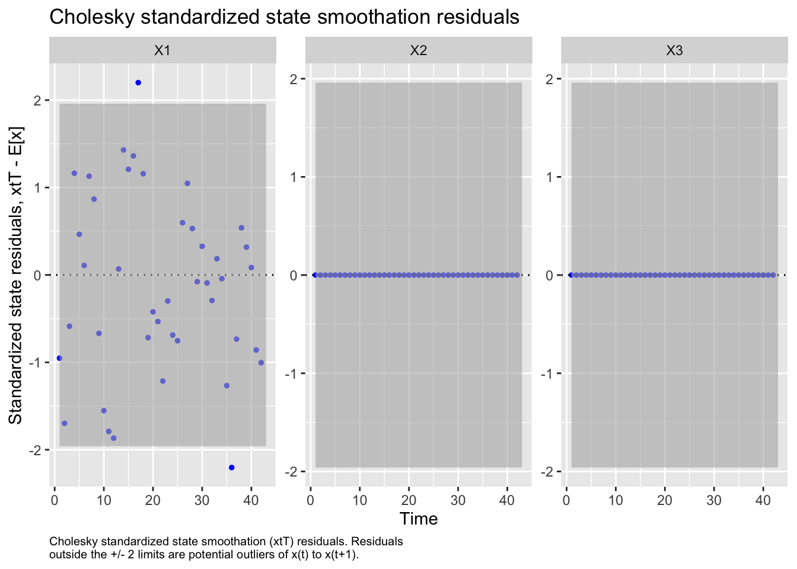
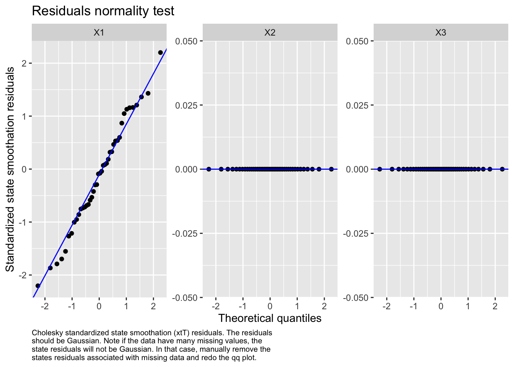
Full Ricker’s Model with Static Spawner Effect and Winter PDO covariate
Fit the expanded model that includes the winter PDO index as the covariate (pdo_winter_t2). What is the mean level of productivity? Plot the ts of \(\delta_t\) and note the AICc for this model. Also plot appropriate model diagnostics.
#create the model params for the full Ricker's modelZ <-array(NA,c(1,3,TT)) # the array has 3 elements nowZ[1,1,] <-c(1)Z[1,2,] <- SR_dat_short$spawnersZ[1,3,] <- SR_dat_short$pdo_winter_t2 # Covariate data is added to the Z matrix# The model states are the covariate effects in a DLMmodlist <-list( # All other arguments are left as defaultZ = Z,U ="zero",A ="zero",B ="identity",Q =ldiag(list("q1",0,"q3")) # creates a custom Q matrix with zero variance for the spawner effect... I think? Additionally, the intercept variance may need to be contrained further)winter_Rick <-MARSS(Yt, model = modlist, control =list(maxit=3000), inits =list(x0 =matrix(c(1,0,0),3,1))) # added inits list due to marss error
Success! abstol and log-log tests passed at 1358 iterations.
Alert: conv.test.slope.tol is 0.5.
Test with smaller values (<0.1) to ensure convergence.
MARSS fit is
Estimation method: kem
Convergence test: conv.test.slope.tol = 0.5, abstol = 0.001
Estimation converged in 1358 iterations.
Log-likelihood: -51.38573
AIC: 114.7715 AICc: 117.1048
Estimate
R.R 1.96e-01
Q.q1 3.11e-01
Q.q3 0.00e+00
x0.X1 1.13e+00
x0.X2 1.32e-06
x0.X3 1.54e-01
Initial states (x0) defined at t=0
Standard errors have not been calculated.
Use MARSSparamCIs to compute CIs and bias estimates.
Result: AICC is 117.1, higher than the previous models and all the variance is loaded onto the intercept again. I have tried to limit the variation of the intercept but I get a MARSS error every time. I have also tried to change the initial values bu the resulting model was the same.
Code
autoplot(winter_Rick, silent =TRUE)
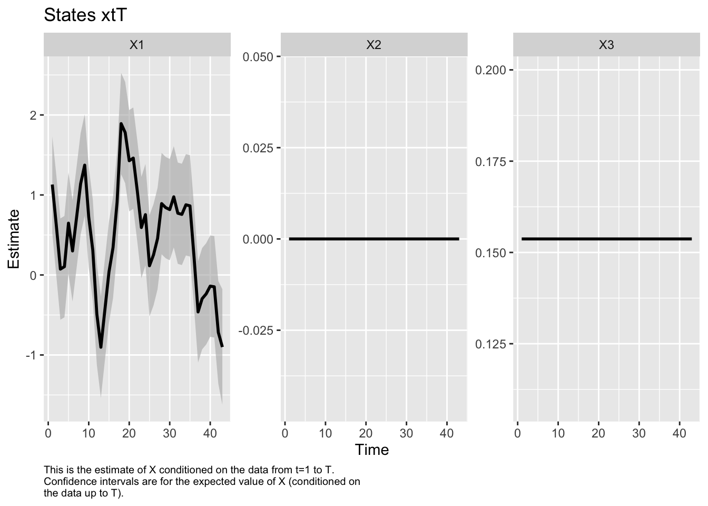
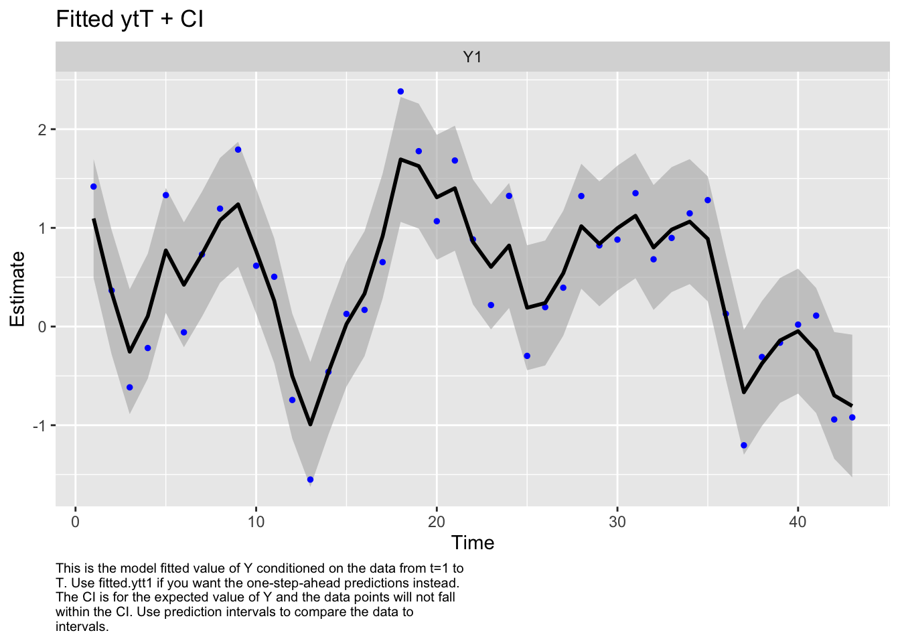
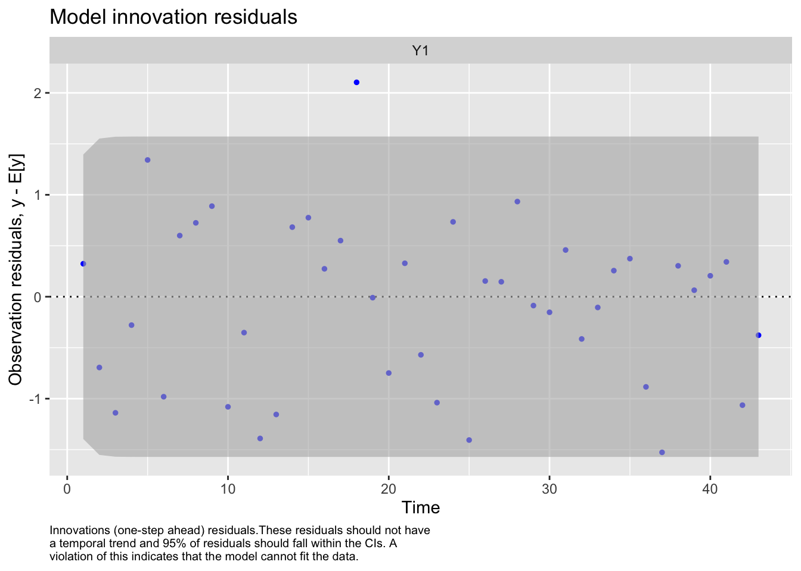
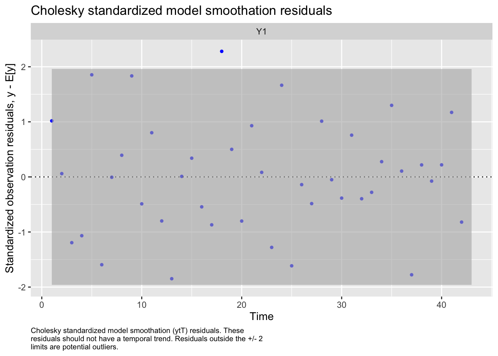
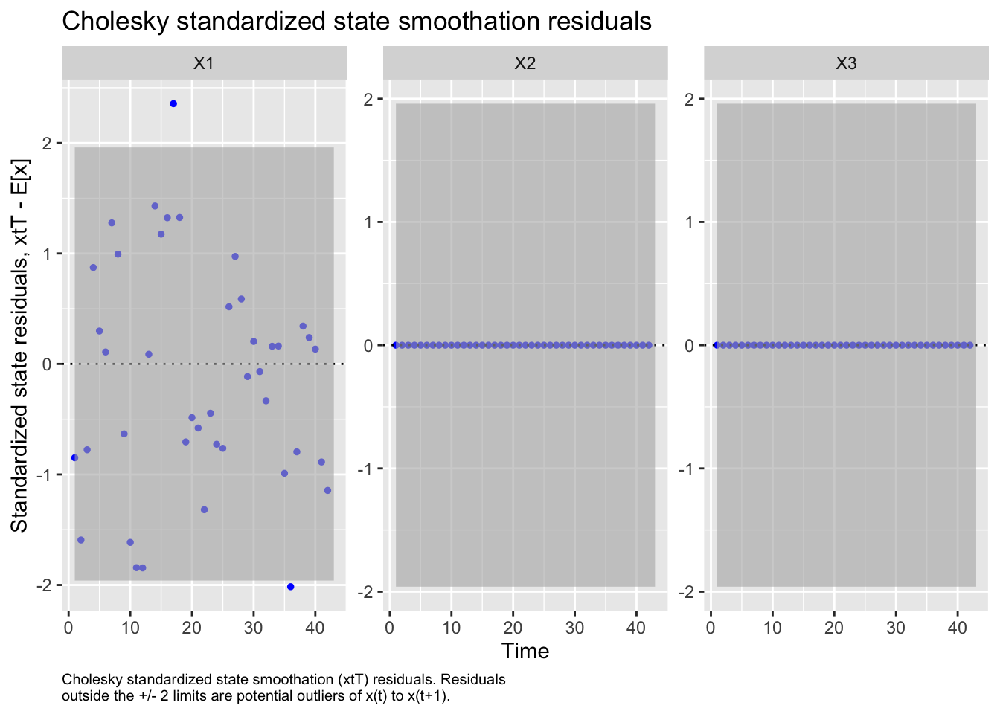
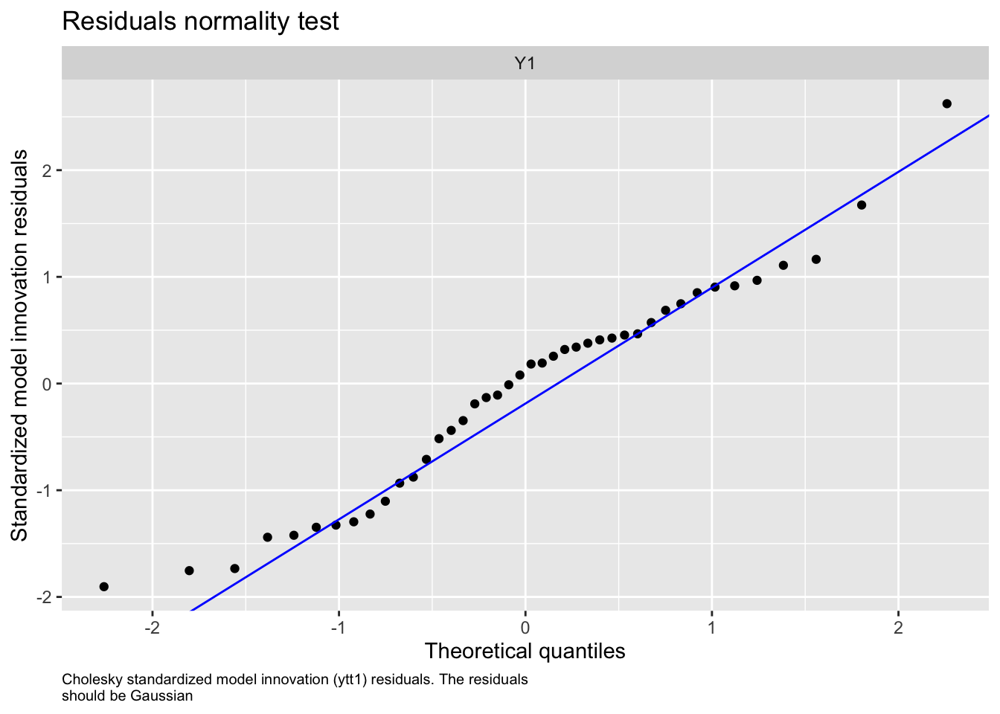
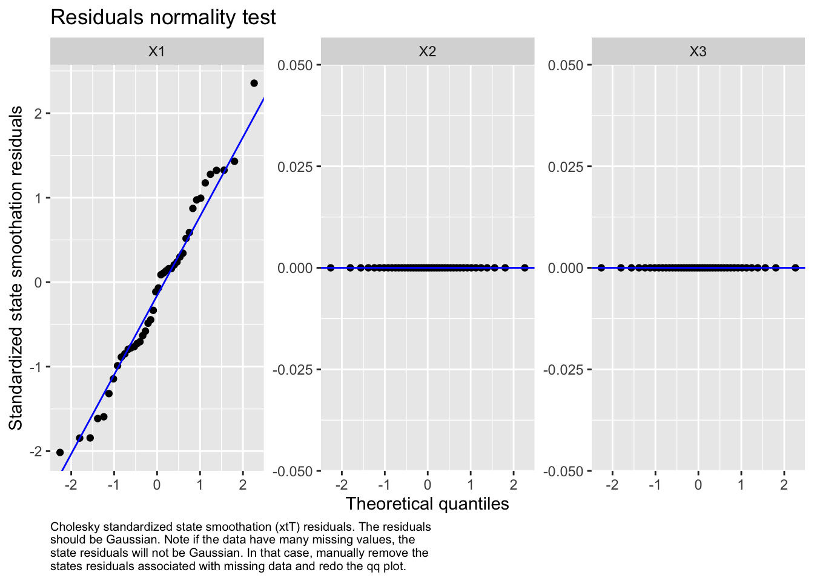
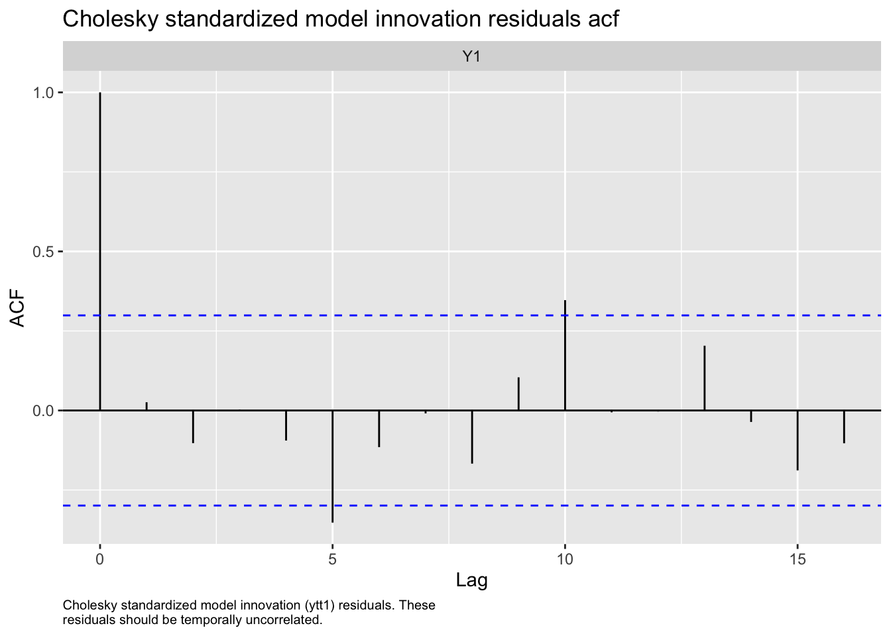
Why is all the variation loaded onto the intercept again? Is this just a feature of the model? The winter effect is nonzero but still pretty small compared.
Results
Based on AICc, which of the models above is the most parsimonious? Is it well behaved (i.e., are the model assumptions met)? Plot the model forecasts for the best model. Is this a good forecast model?
Code
#Summary Table #Someone want to check I pulled the correct things for meanprod and SE? mods <-c("Reduced Ricker","Full Ricker","Summer PDO","Winter PDO")NLL <-c(reduced_Rick$logLik, full_Rick$logLik, summer_Rick$logLik, winter_Rick$logLik)meanProd<-c(reduced_Rick$states[1,1] ,full_Rick$states[2,1],summer_Rick$states[3,1],winter_Rick$states[3,1])SEs<-c(reduced_Rick$states.se[1,1] ,full_Rick$states.se[2,1],summer_Rick$states.se[3,1],winter_Rick$states.se[3,1])tab <-cbind.data.frame(mods, NLL, meanProd, SEs)kable(tab, col.names =c("Models", "Likelihood", "Means", "SE"))
According to AICc, the most parsimonious model was the Reduced Ricker, which was essentially a random walk model. While adding complexity with the other models did decrease the negative log likelihoods, the improved fits to data were quite small, and adding parameters didn’t improve fit enough to justify using more complex models.
Forecast data
We used the best fitting model to do the forecast, which was the Reduced Ricker.
Forecasting from a DLM involves two steps:
Get an estimate of the regression parameters at time \(t\) from data up to time \(t-1\). These are also called the one-step ahead forecast (or prediction) of the regression parameters.
Make a prediction of \(y\) at time \(t\) based on the predictor variables at time \(t\) and the estimate of the regression parameters at time \(t\) (step 1). This is also called the one-step ahead forecast (or prediction) of the observation.
Code
## shrink the window of years so the response variable will have a full set of valuesSR_dat_short2 <- SR_data[SR_data[,"brood_year"] >=1956& SR_data[,"brood_year"] <=2005, ]#Create a column for the response variableSR_dat_short2$Yt <-log(SR_dat_short2$recruits/SR_dat_short2$spawners) #Yt represents log of recruits over spawners. #Create the observation matrixYt <-t(SR_dat_short2$Yt)#determines number of elementsTT <-nrow(SR_dat_short2)# our top model from above: Reduced Ricker#create the model params Z <-array(NA,c(1,1,TT))Z[1,1,] <-c(1)modlist <-list( # All other arguaments are left as defaultZ = Z,U ="zero",A ="zero",B ="identity")#Run again for good measure reduced_Rick <-MARSS(Yt, model = modlist)
Success! abstol and log-log tests passed at 26 iterations.
Alert: conv.test.slope.tol is 0.5.
Test with smaller values (<0.1) to ensure convergence.
MARSS fit is
Estimation method: kem
Convergence test: conv.test.slope.tol = 0.5, abstol = 0.001
Estimation converged in 26 iterations.
Log-likelihood: -51.87353
AIC: 109.7471 AICc: 110.3625
Estimate
R.R 0.213
Q.Q 0.301
x0.x0 0.998
Initial states (x0) defined at t=0
Standard errors have not been calculated.
Use MARSSparamCIs to compute CIs and bias estimates.
Code
## get list of Kalman filter outputkf_out <-MARSSkfss(reduced_Rick)## forecasts of regr parameters; 2xT matrixeta <- kf_out$xtt1## ts of E(forecasts)fore_mean <-vector()for (t in1:TT) { fore_mean[t] <- Z[, , t] %*% eta[, t, drop =FALSE]}plot(fore_mean)
Code
plot(SR_dat_short2$Yt)
Code
plot(x=SR_dat_short2$brood_year , y= fore_mean, type ="b", pch =19, col ="red", xlab ="Year", ylab ="log(R/S)", ylim =c(-2, 3), xlim =c(1956, 1998))lines(SR_dat_short2$brood_year, SR_dat_short2$Yt, pch =18, col ="blue", type ="b", lty =2)legend("topright", legend=c("data", "forecast"),col=c("red", "blue"), lty =1:2, cex=0.8)
The one step ahead forcast follows the trend of the data, but is lagged behind the data by one year. ##
Code
# compute the forecast variance:## variance of regr parameters; 1x2xT arrayPhi <- kf_out$Vtt1## obs variance; 1x1 matrixR_est <-coef(reduced_Rick, type ="matrix")$R## ts of Var(forecasts)fore_var <-vector()m<-1#number of regression parsfor (t in1:TT) { tZ <-matrix(Z[, , t], m, 1) ## transpose of Z fore_var[t] <- Z[, ,t] %*% Phi[, , t] %*% tZ + R_est}plot(x = SR_dat_short2$brood_year, y=fore_mean, type ="l", lwd =2, xlab ="Year", ylab ="Log(R/S)", ylim =c(-3,3))lines(x = SR_dat_short2$brood_year, y = fore_mean-2*fore_var, lty =2)lines(x = SR_dat_short2$brood_year, y = fore_mean +2*fore_var, lty=2) points(x =SR_dat_short2$brood_year, y = SR_dat_short2$Yt)
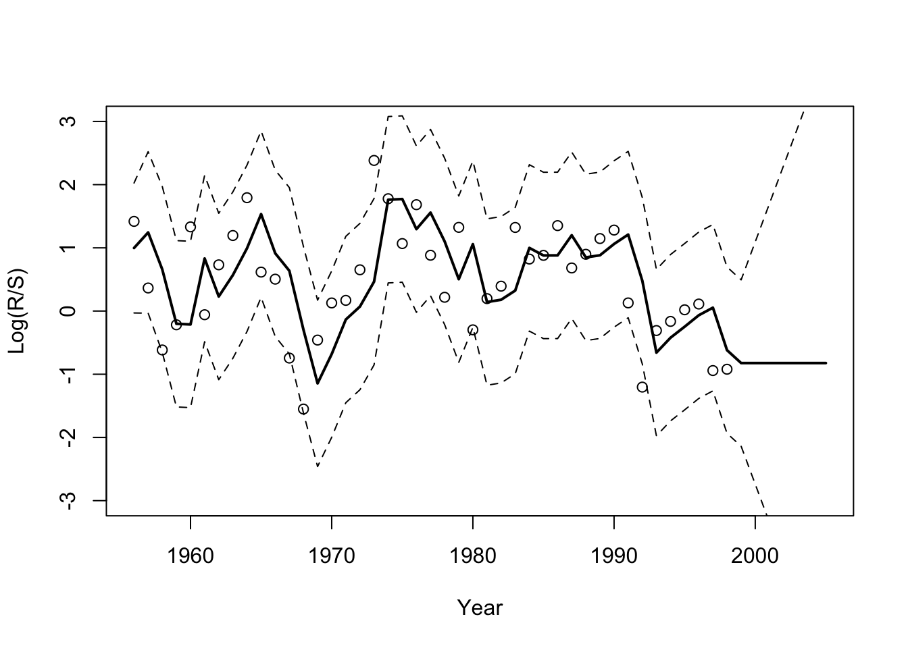
This model fit the data reasonably well, with the model following the trend of the data, though with a one year lag, and observations fall within the margin of error. The prediction flattens out at the end of the time series, which makes sense given this is a random walk model that is informed by the last year of data.
Code
## forecast errorsinnov <- kf_out$Innov## Q-Q plot of innovationsqqnorm(t(innov), main ="", pch =16, col ="blue")## add y=x line for easier interpretationqqline(t(innov))
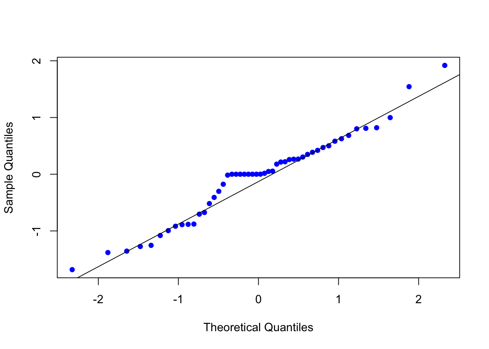
There are some odd trends in this QQ plot and to be honest, I’m not sure the best way to interpret it.
Consider other environmental factors that could influence the time-varying intrinsic productivity of these salmon. For example, are there other large-scale indices of ocean conditions (e.g., sea-surface temperature, El Niño Southern Oscillation)? You could also consider the possible influence of other salmon stocks such as those we examined in Lab 1.
The Kvichak River system flows into Bristol Bay Alaska, and some other possible environmental factors that could influence time-varying productivity could include sea ice dynamics, driving the underlying primary productivity and food availability of plankton for salmon that have migrated to the Bering Sea, which could have an impact on fecundity and survival. Sea ice extent is correlated with certain species of copepods, with varying lipid content, and some species may be better food for salmon. Sea Ice would likely be correlated with sea surface temperatures, but SST could be another covariate to explore as the Bering Sea has shown evidence of warming in recent decades.
Discussion
Ultimately this lab was a good lesson in covariates not improving model fits enough to justify more complex models. While we can speculate and make inference on environmental impacts on factors, such as cycles such as PDO on spawner recruit relationships, sometimes the most simple models explain enough of the relationship where additional complexity isn’t necessary. In this lab, the model with the lowest AICc was essentially a random walk process, and while considering density dependency and environmental processes such as summer and winter PDO did ever so slightly improve the negative log likelihoods, the fit gained from the additional parameters wasn’t worth it.
Team contributions
Eric completed the data cleaning and set up the primary four models. Madi added plots and created the NLL and AICc tables and both Karl and Madi tackled the forecast portion of the lab. Discussion and notes in the document were added by Madi and Eric and Karl proofread and edited where appropriate.
Source Code
---title: "Team 3 - Lab 5"subtitle: "Dynamic Linear Models (DLMs) - Time-varying productivity of salmon"author: "Eric French, Madison Heller-Shipley, Karl Veggerby"date: May 23, 2023output: html_document: code-folding: true toc: true toc_float: true---```{r setup, include = FALSE}options(dplyr.summarise.inform = FALSE)library(MARSS)library(marssTMB)library(dplyr)library(ggplot2)library(kableExtra)```------------------------------------------------------------------------# DataThe data explored for this lab is spawner and recruit Kvichak Sockeye data, which is a river system in Bristol Bay, Alaska. This data set includes data from 1952-2005. There is missing spawner data from 1952-1995, and missing recruit data from 1999-2005, with a valid window from 1966-1998. ## Load the data```{r, eval=TRUE}## library(devtools)## Windows users will likely need to set this## Sys.setenv("R_REMOTES_NO_ERRORS_FROM_WARNINGS" = "true")#devtools::install_github("nwfsc-timeseries/atsalibrary") already installed## get datadata(KvichakSockeye, package="atsalibrary")SR_data <- KvichakSockeyehead(SR_data)```The data are a dataframe with columns for brood year (`brood_year`), number of spawners (`spawners`), number of recruits (`recruits`) and PDO at year $t-2$ in summer (`pdo_summer_t2`) and in winter (`pdo_winter_t2`).### Plot Biological Data```{r dlm-data-head-bio}par(mfrow=c(2,2))plot(SR_data$brood_year, SR_data$spawners, type= "l", xlab = "Year", ylab = "Spawners")plot(SR_data$brood_year, SR_data$recruits, type= "l", xlab = "Year", ylab = "Recruits")plot(SR_data$brood_year, log(SR_data$recruits/SR_data$spawners) , xlab = "Year", ylab = "log(R/S)", type= "l")plot(SR_data$spawners, SR_data$recruits, xlab = "Spawners", ylab = "Recruits", pch = 16)```### Plot Environmental Data ```{r dlm-data-head-environment}par(mfrow=c(2,1))plot(SR_data$brood_year, SR_data$pdo_summer_t2, type= "l", xlab = "Year", ylab = "Summer PDO")abline(h=0, lty = 2)plot(SR_data$brood_year, SR_data$pdo_winter_t2, type= "l", xlab = "Year", ylab = "Winter PDO")abline(h=0, lty= 2)```## Wrangle the data```{r wrangle_data}## shrink the window of years so the response variable will have a full set of valuesSR_dat_short <- SR_data[SR_data[,"brood_year"] >= 1956 & SR_data[,"brood_year"] <= 1998, ]#Create a column for the response variableSR_dat_short$Yt <- log(SR_dat_short$recruits/SR_dat_short$spawners) #Yt represents log of recruits over spawners. #Create the observation matrixYt <- t(SR_dat_short$Yt)#determines number of elementsTT <- nrow(SR_dat_short)```# General tasksUse the information and data in the previous section to answer the following questions. Note that if any model is not converging, then you will need to increase the `maxit` parameter in the `control` argument/list that gets passed to `MARSS()`. For example, you might try `control=list(maxit=2000)`.# Methods## Reduced Ricker's Model1. Begin by fitting a reduced form of Ricker's model that includes only a time-varying level ($\alpha_t$) and observation error ($v_t$). That is,```{=tex}\begin{align*}\text{log}(R_t) &= \alpha_t + \text{log}(S_t) + v_t \\\text{log}(R_t/S_t) &= \alpha_t + v_t\end{align*}```This model assumes no density-dependent survival in that the number of recruits is an ascending function of spawners. Plot the ts of $\alpha_t$ and note the AICc for this model. Also plot appropriate model diagnostics.```{r}#create the model params for reduced Ricker's modelZ <-array(NA,c(1,1,TT))Z[1,1,] <-c(1)modlist <-list( # All other arguaments are left as defaultZ = Z,U ="zero",A ="zero",B ="identity")reduced_Rick <-MARSS(Yt, model = modlist)```Results: The AICc of this model is 110.36, state plots and residuals are below### Model and State Plots```{r}autoplot(reduced_Rick, silent =TRUE)```Notes: The observations and level follow each other exactly. This makes sense considering this is the only variable in the model. The model residuals don't seem to follow a trend, but they are absolutely not normally distributed.The state residuals have no time trend, and the model smoothation results seem to be normally distributed.The ACF plot has significant autocorrelation at lags of 5 and 10 years## Full Ricker's Model with Static Spawner Effect2. Fit the full Ricker model with a time-varying intercept and a static effect of spawners. For this model, obtain the time series of $\alpha_t$, which is an estimate of the stock productivity in the absence of density-dependent effects. How do these estimates of productivity compare to those from the previous question? Plot the ts of $\alpha_t$ and note the AICc for this model. Also plot appropriate model diagnostics. ```{=tex}\begin{align*}\text{log}(R_t/S_t) = \alpha_t - bS_t + v_t \\\alpha_t = \alpha_{t-1} + w_t\end{align*}``````{r}#create the model params for the full Ricker's modelZ <-array(NA,c(1,2,TT)) # the array has 2 elements nowZ[1,1,] <-c(1)Z[1,2,] <- SR_dat_short$spawnersmodlist <-list( # All other arguments are left as defaultZ = Z,U ="zero",A ="zero",B ="identity",Q =ldiag(list("q1",0)) # creates a custom Q matrix with zero variance for the spawner effect... I think)full_Rick <-MARSS(Yt, model = modlist, inits =list(x0 =matrix(c(0),2,1))) # added inits list due to marss error```Result: AICC is 112.67, higher than the previous model after multiple attempts at different x0 values. each one resulted in the same model. The increase in AICc is likely driven by an increase in parameters by allowing density dependency and time variation in the intercepts. ```{r}autoplot.marssMLE(full_Rick, silent =TRUE)```Results: Model fit, residuals, and ACF all look the same as the previous model because all the variation was loaded onto the intercept term. ## Full Ricker's Model with Static Spawner Effect and Summer PDO covariate3. Fit the expanded model that includes the summer PDO index as the covariate (`pdo_summer_t2`). What is the mean level of productivity? Plot the ts of $\delta_t$ and note the AICc for this model. Also plot appropriate model diagnostics.```{=tex}\begin{align*}\text{log}(R_t/S_t) = \alpha_t + \delta_t X_t - bS_t + v_t \\\alpha_t = \alpha_{t-1} + w_t \\\delta_t = \delta_{t-1} + w_t\end{align*}``````{r}#create the model params for the full Ricker's modelZ <-array(NA,c(1,3,TT)) # the array has 3 elements nowZ[1,1,] <-c(1)Z[1,2,] <- SR_dat_short$spawnersZ[1,3,] <- SR_dat_short$pdo_summer_t2 # Covariate data is added to the Z matrix# The model states are the covariate effects in a DLMmodlist <-list( # All other arguments are left as defaultZ = Z,U ="zero",A ="zero",B ="identity",Q =ldiag(list("q1",0,"q3")) # creates a custom Q matrix with zero variance for the spawner effect... I think? Additionally, the intercept variance may need to be contrained further)summer_Rick <-MARSS(Yt, model = modlist, control =list(maxit=1000), inits =list(x0 =matrix(c(1,1,1),3,1))) # added inits list due to marss error```Result: AICC is 117.89, higher than the previous models and all the variance is loaded onto the intercept again.I have tried to limit the variation of the intercept but I get a MARSS error every time. I have also tried to change the initial values bu the resulting model was the same.```{r}autoplot(summer_Rick, silent =TRUE)```## Full Ricker's Model with Static Spawner Effect and Winter PDO covariate4. Fit the expanded model that includes the winter PDO index as the covariate (`pdo_winter_t2`). What is the mean level of productivity? Plot the ts of $\delta_t$ and note the AICc for this model. Also plot appropriate model diagnostics.```{=tex}\begin{align*}\text{log}(R_t/S_t) = \alpha_t + \delta_t X_t - bS_t + v_t \\\alpha_t = \alpha_{t-1} + w_t \\\delta_t = \delta_{t-1} + w_t\end{align*}``````{r}#create the model params for the full Ricker's modelZ <-array(NA,c(1,3,TT)) # the array has 3 elements nowZ[1,1,] <-c(1)Z[1,2,] <- SR_dat_short$spawnersZ[1,3,] <- SR_dat_short$pdo_winter_t2 # Covariate data is added to the Z matrix# The model states are the covariate effects in a DLMmodlist <-list( # All other arguments are left as defaultZ = Z,U ="zero",A ="zero",B ="identity",Q =ldiag(list("q1",0,"q3")) # creates a custom Q matrix with zero variance for the spawner effect... I think? Additionally, the intercept variance may need to be contrained further)winter_Rick <-MARSS(Yt, model = modlist, control =list(maxit=3000), inits =list(x0 =matrix(c(1,0,0),3,1))) # added inits list due to marss error```Result: AICC is 117.1, higher than the previous models and all the variance is loaded onto the intercept again.I have tried to limit the variation of the intercept but I get a MARSS error every time. I have also tried to change the initial values bu the resulting model was the same.```{r}autoplot(winter_Rick, silent =TRUE)```Why is all the variation loaded onto the intercept again? Is this just a feature of the model? The winter effect is nonzero but still pretty small compared.# Results 5. Based on AICc, which of the models above is the most parsimonious? Is it well behaved (i.e., are the model assumptions met)? Plot the model forecasts for the best model. Is this a good forecast model?```{r}#Summary Table #Someone want to check I pulled the correct things for meanprod and SE? mods <-c("Reduced Ricker","Full Ricker","Summer PDO","Winter PDO")NLL <-c(reduced_Rick$logLik, full_Rick$logLik, summer_Rick$logLik, winter_Rick$logLik)meanProd<-c(reduced_Rick$states[1,1] ,full_Rick$states[2,1],summer_Rick$states[3,1],winter_Rick$states[3,1])SEs<-c(reduced_Rick$states.se[1,1] ,full_Rick$states.se[2,1],summer_Rick$states.se[3,1],winter_Rick$states.se[3,1])tab <-cbind.data.frame(mods, NLL, meanProd, SEs)kable(tab, col.names =c("Models", "Likelihood", "Means", "SE"))``````{r}#AICc Table mods <-c("Reduced Ricker","TimeVar Intercept","Summer PDO","Winter PDO")aic <-c(reduced_Rick$AICc, full_Rick$AICc, summer_Rick$AICc, winter_Rick$AICc)daic <- aic-min(aic)tab <-cbind.data.frame(mods, aic, daic)kable(tab, col.names =c("Models", "AICc", "delta AICc"))```According to AICc, the most parsimonious model was the Reduced Ricker, which was essentially a random walk model. While adding complexity with the other models did decrease the negative log likelihoods, the improved fits to data were quite small, and adding parameters didn't improve fit enough to justify using more complex models.## Forecast dataWe used the best fitting model to do the forecast, which was the Reduced Ricker. Forecasting from a DLM involves two steps:1. Get an estimate of the regression parameters at time $t$ from data up to time $t-1$. These are also called the one-step ahead forecast (or prediction) of the regression parameters.2. Make a prediction of $y$ at time $t$ based on the predictor variables at time $t$ and the estimate of the regression parameters at time $t$ (step 1). This is also called the one-step ahead forecast (or prediction) of the observation.```{r, Forecast data}## shrink the window of years so the response variable will have a full set of valuesSR_dat_short2 <- SR_data[SR_data[,"brood_year"] >= 1956 & SR_data[,"brood_year"] <= 2005, ]#Create a column for the response variableSR_dat_short2$Yt <- log(SR_dat_short2$recruits/SR_dat_short2$spawners) #Yt represents log of recruits over spawners. #Create the observation matrixYt <- t(SR_dat_short2$Yt)#determines number of elementsTT <- nrow(SR_dat_short2)# our top model from above: Reduced Ricker#create the model params Z <- array(NA,c(1,1,TT))Z[1,1,] <- c(1)modlist <- list( # All other arguaments are left as default Z = Z, U = "zero", A = "zero", B = "identity")#Run again for good measure reduced_Rick <- MARSS(Yt, model = modlist)## get list of Kalman filter outputkf_out <- MARSSkfss(reduced_Rick)## forecasts of regr parameters; 2xT matrixeta <- kf_out$xtt1## ts of E(forecasts)fore_mean <- vector()for (t in 1:TT) { fore_mean[t] <- Z[, , t] %*% eta[, t, drop = FALSE]}plot(fore_mean)plot(SR_dat_short2$Yt)plot(x=SR_dat_short2$brood_year , y= fore_mean, type = "b", pch = 19, col = "red", xlab = "Year", ylab = "log(R/S)", ylim = c(-2, 3), xlim = c(1956, 1998))lines(SR_dat_short2$brood_year, SR_dat_short2$Yt, pch = 18, col = "blue", type = "b", lty = 2)legend("topright", legend=c("data", "forecast"), col=c("red", "blue"), lty = 1:2, cex=0.8)```The one step ahead forcast follows the trend of the data, but is lagged behind the data by one year. ##```{r}# compute the forecast variance:## variance of regr parameters; 1x2xT arrayPhi <- kf_out$Vtt1## obs variance; 1x1 matrixR_est <-coef(reduced_Rick, type ="matrix")$R## ts of Var(forecasts)fore_var <-vector()m<-1#number of regression parsfor (t in1:TT) { tZ <-matrix(Z[, , t], m, 1) ## transpose of Z fore_var[t] <- Z[, ,t] %*% Phi[, , t] %*% tZ + R_est}plot(x = SR_dat_short2$brood_year, y=fore_mean, type ="l", lwd =2, xlab ="Year", ylab ="Log(R/S)", ylim =c(-3,3))lines(x = SR_dat_short2$brood_year, y = fore_mean-2*fore_var, lty =2)lines(x = SR_dat_short2$brood_year, y = fore_mean +2*fore_var, lty=2) points(x =SR_dat_short2$brood_year, y = SR_dat_short2$Yt) ```This model fit the data reasonably well, with the model following the trend of the data, though with a one year lag, and observations fall within the margin of error. The prediction flattens out at the end of the time series, which makes sense given this is a random walk model that is informed by the last year of data. ```{r}## forecast errorsinnov <- kf_out$Innov## Q-Q plot of innovationsqqnorm(t(innov), main ="", pch =16, col ="blue")## add y=x line for easier interpretationqqline(t(innov))```There are some odd trends in this QQ plot and to be honest, I'm not sure the best way to interpret it. 6. Consider other environmental factors that could influence the time-varying intrinsic productivity of these salmon. For example, are there other large-scale indices of ocean conditions (e.g., sea-surface temperature, El Niño Southern Oscillation)? You could also consider the possible influence of other salmon stocks such as those we examined in Lab 1.The Kvichak River system flows into Bristol Bay Alaska, and some other possible environmental factors that could influence time-varying productivity could include sea ice dynamics, driving the underlying primary productivity and food availability of plankton for salmon that have migrated to the Bering Sea, which could have an impact on fecundity and survival. Sea ice extent is correlated with certain species of copepods, with varying lipid content, and some species may be better food for salmon. Sea Ice would likely be correlated with sea surface temperatures, but SST could be another covariate to explore as the Bering Sea has shown evidence of warming in recent decades. # DiscussionUltimately this lab was a good lesson in covariates not improving model fits enough to justify more complex models. While we can speculate and make inference on environmental impacts on factors, such as cycles such as PDO on spawner recruit relationships, sometimes the most simple models explain enough of the relationship where additional complexity isn't necessary. In this lab, the model with the lowest AICc was essentially a random walk process, and while considering density dependency and environmental processes such as summer and winter PDO did ever so slightly improve the negative log likelihoods, the fit gained from the additional parameters wasn't worth it. # Team contributionsEric completed the data cleaning and set up the primary four models. Madi added plots and created the NLL and AICc tables and both Karl and Madi tackled the forecast portion of the lab. Discussion and notes in the document were added by Madi and Eric and Karl proofread and edited where appropriate.